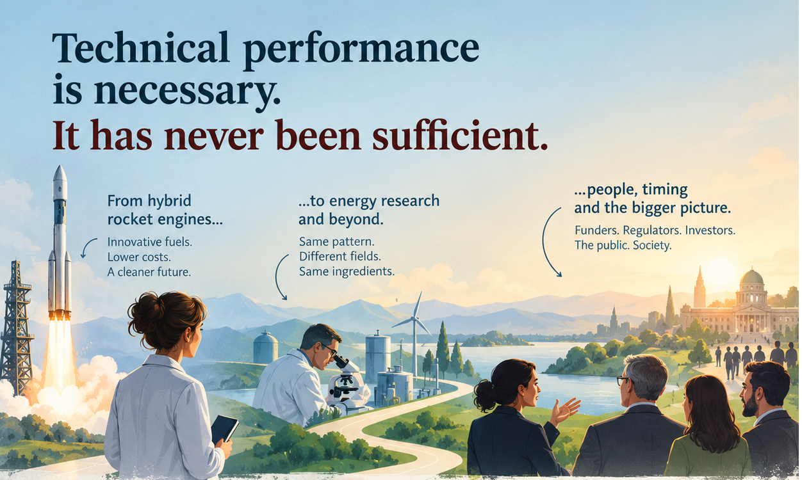

El rendimiento técnico es necesario, pero nunca ha sido suficiente.
Octubre de 2026

La interfaz | Tecnología, Instituciones, Sociedad
El rendimiento técnico es necesario, pero nunca ha sido suficiente.
Empecé mi carrera trabajando con motores cohete híbridos: combustibles innovadores pensados para hacer el acceso al espacio más barato y menos perjudicial para el medio ambiente. Veinte años después, tras muchos proyectos en propulsión aeroespacial e investigación energética, sigo viendo el mismo patrón: que una línea de investigación avanzara o se estancara rara vez depende únicamente de la ciencia. Depende de que quienes financian, regulan e invierten puedan entender por qué es importante, y de que el momento coincida con aquello a lo que la sociedad estaba prestando atención.
No es culpa de nadie: la atención depende de muchos factores, la investigación requiere décadas… Y la investigación básica puede parecer muy alejada de cualquier aplicación, hasta que resulta ser precisamente el paso necesario para hacer posible un avance.
Pensemos en una pregunta que he escuchado muchas veces: ¿por qué ir a Marte cuando hay tantos problemas urgentes que resolver aquí en la Tierra? Es una pregunta legítima, y ningún dato sobre el rendimiento de un motor puede contestarla. Tiene que ver con prioridades, horizontes temporales y con lo que esperamos que una tecnología pueda hacer posible. Para responder bien hace falta alguien capaz de explicar para qué sirve la investigación.
Lo que he aprendido es que saber explicar el impacto de una línea de investigación en la sociedad, utilizando el lenguaje de las instituciones, los inversores y el público, forma parte del proceso mediante el cual se desarrollan las tecnologías. Genera la confianza que necesitan las inversiones a largo plazo.
A menudo he deseado que hubiera alguien que entendiera la ciencia lo suficiente para explicársela a quienes toman las decisiones, y que entendiera las limitaciones de quienes toman las decisiones lo suficiente como para explicárselas a los científicos. A menudo este papel no es responsabilidad de nadie. Debería serlo de alguien.
Piensa en una tecnología en la que trabajas o que sigues. ¿En qué momento dejó de ser una cuestión puramente técnica? ¿Y quién ayudó a quienes toman las decisiones a entender lo que estaba en juego?